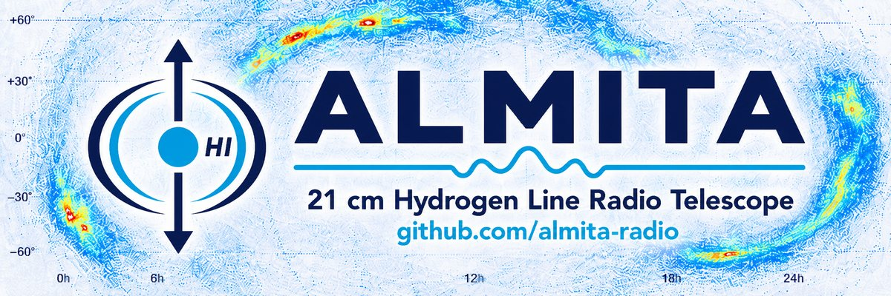
ALMITA — 21 cm Hydrogen Line Radio Telescope
Antenna Listening Mostly to Interference, Tentatively Astronomy
ALMITA is an open-source amateur radio astronomy project developed in Chile by Felipe Fridman (ffridman@gmail.com), built around a 21 cm neutral hydrogen (HI) radio telescope. It listens to the 1420 MHz hydrogen line with RTL-SDR receivers, a modified grid dish and an INDI/OnStep equatorial mount. A Raspberry Pi in a shielded box sits at the instrument, and a notebook runs the web console. ALMITA turns raw radio data into traceable spectra, velocity cubes and maps. It is an experimental amateur radio astronomy project that works fully offline in the field.
Source code on GitHub Project README Project overview
From antenna to maps: OBSERVE → REDUCE → SCIENCE
OBSERVE → REDUCE v1.1 → SCIENCE ↑ ALIGN · CALIBRATE · RFI_REF supporting systems
REDUCE and SCIENCE V1 were frozen in October 2026 as a fixed, verifiable reference. They were reopened twice on purpose: REDUCE v1.1 folds frequency-switched captures, and SCIENCE maps use an exact spherical frame so they can cross the celestial pole. Other improvements, such as ESTIMATOR v2 (a better spectrum estimator inside REDUCE), are opt-in and leave the engine unchanged.
Plans sky mosaics, steps the equatorial mount and records raw I/Q with pointing and environment metadata in HDF5.
REDUCE produces reproducible Level 1 spectra with masks, LSRK velocity, uncertainty and quality information.
SCIENCE grids the spectra into an LSRK velocity cube and relative integrated maps, with uncertainty and coverage maps.
Receiver gain is characterised first, then kept fixed during a session, so observations can be compared.
Every capture is checked as it is recorded: comb teeth, narrow lines and time pulses are flagged, never filled in, and REDUCE can leave them out.
Twelve pages behind a login, from STATUS and PREFLIGHT to OBSERVE, MONITOR, REDUCE, SCIENCE, SESSIONS and a remote desktop of the capture Pi.
LOBE fits the beam from a transit with the mount; TRANSIT logs the band power every 10 s while the Sun drifts through a still antenna.
Everything runs locally on a notebook and a Raspberry Pi; no internet connection is needed to observe.
First results
Hydrogen with frequency switching, repeated and matched · 12 November 2026
A week later the same 5 × 5 mosaic around l ≈ +20° was observed again, now with frequency switching (40 s per pointing) and a new feed with a Pawsey balun and a reflector plate. The line shows up in all 25 pointings. For the six pointings inside the reference cube, the switched spectra match HI4PI's prediction for the same pointing and 20° beam with a shape correlation of +0.94 to +0.99 (5 November: +0.43 to +0.77), on a flat baseline. The receiver's Y-factor was 4.71 dB, a system temperature of about 120 K.
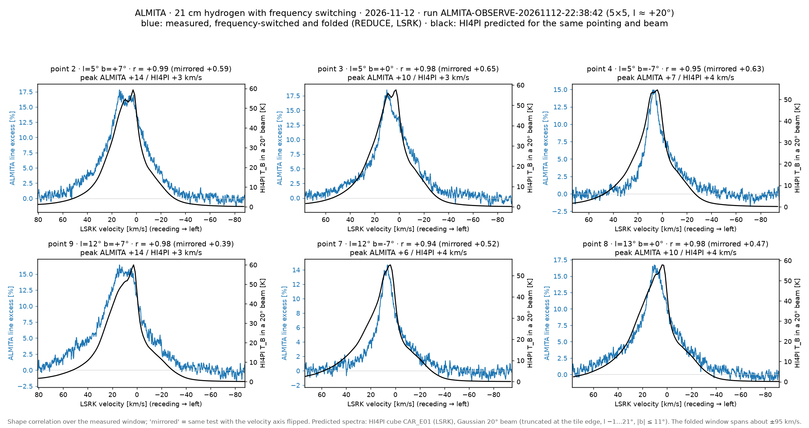
First 21 cm hydrogen detection · 5 November 2026
On its first night on a rooftop, in a 5 × 5 mosaic around galactic longitude l ≈ +20°, ALMITA saw the hydrogen line where the HI4PI all-sky survey says it should be. For the six pointings inside the reference cube, the measured line has the shape HI4PI predicts for the same pointing, the same 20° beam and the same instant (shape correlation +0.43 to +0.77). With the velocity axis flipped, the match fails.
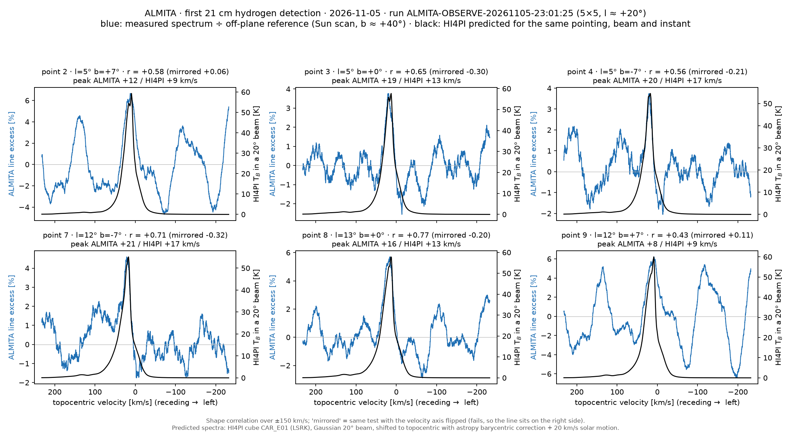
Frequency switching · November 2026
Those waves are the receiver's own band shape, which is ±15 % and drifts. With frequency switching the SDR alternates its tuning by ±0.6 MHz every 2 s: the hydrogen line moves with the tuning, the receiver's shape does not, and (A − B) / B cancels the shape.
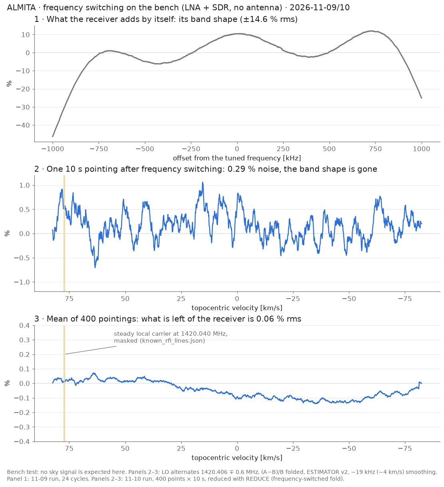
What is new (November 2026)
- Two machines. Everything used to run on a Raspberry Pi 5, and that Pi 5 turned out to be the loudest local interferer: it radiated a 357 kHz comb and a forest of narrow lines into the band. It was retired. Now a Raspberry Pi 4 in a closed metal box, at least 1 m from the feed, runs the SDR server and INDI at the dish, and its band is free of that comb. A notebook runs the web console, captures and processing.
- The web console grew to twelve pages: STATUS, PIPELINE, LOBE, TRANSIT, ALIGN, CALIBRATE, OBSERVE, MONITOR, REDUCE, SCIENCE, SESSIONS and DESKTOP. There is one port and a login, a day/night theme for sunlight, a real-mount / simulator switch and a STOP MOUNT button.
- RFI masks live in MONITOR, as an opt-in in REDUCE, and in an Unknown Pleasures art view of each session.
- A new DIY feed: a copper-strip dipole with a Pawsey balun and a reflector plate, modelled with NEC2 and tuned with a NanoVNA (SWR 1.14 at 1420 MHz). It replaced a feed that lost several dB before the LNA.
- TRANSIT: a simple 10-second logger and page to watch the Sun drift through the beam.
- Frequency switching, end to end: a checkbox in OBSERVE, folding in REDUCE, and live views in QUICKLOOK and STATUS.
- A better REDUCE (opt-in; the engine itself is unchanged): overlapping windows, averaged, with spectral kurtosis against pulses. It uses ~95 % of the recorded time instead of about a third. It also runs on several CPU cores and masks a list of known local carriers.
- CALIBRATE measures the Y-factor (50 Ω load against cold sky) and the system temperature. On 5 November it gave Y = 1.53 dB; with the new feed on 12 November, 4.71 dB.
- SCIENCE shows what HI4PI expects for the same area and beam directly under ALMITA's own maps.
The web console
Twelve pages behind one login, shown as each one looks when you land on it. Tap a page for the full screenshot. Network addresses are hidden and the mount camera is blurred; the data is a frequency-switching bench test with the mount on its simulator.

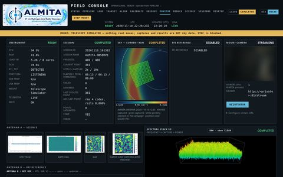
MONITOR · live view of a run: sky map, 3D spectral stack, RFI masks, Unknown Pleasures
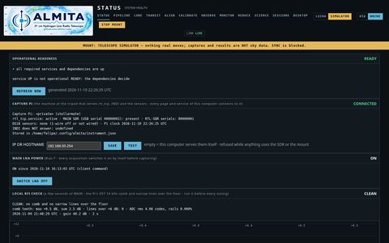
STATUS · instrument health, LNA power, RFI check, hydrogen-line test
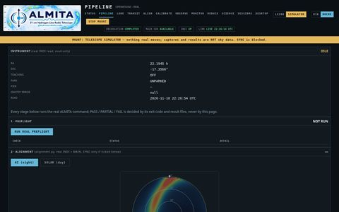
PIPELINE · the whole chain end to end
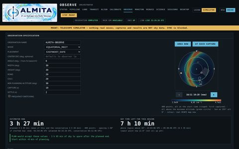
OBSERVE · plan a sky mosaic over the HI4PI map
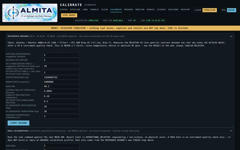
CALIBRATE · receiver profile and Y-factor
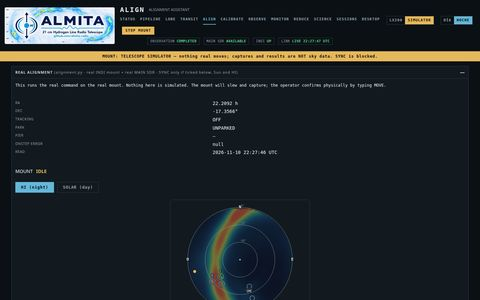
ALIGN · pointing alignment on the Sun or on HI
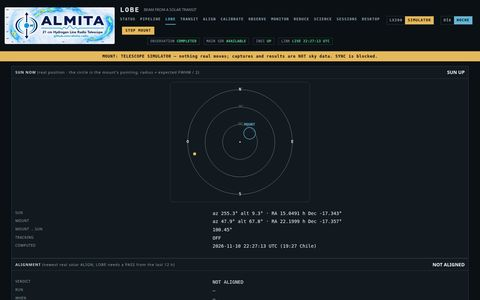
LOBE · beam from a solar transit
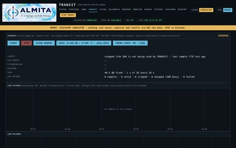
TRANSIT · the Sun through a still antenna
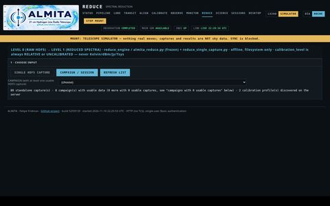
REDUCE · raw captures to spectra
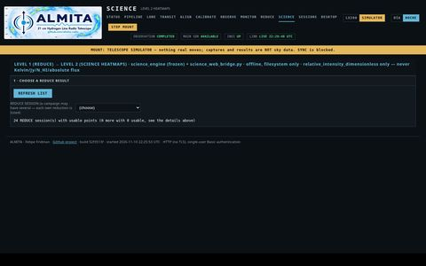
SCIENCE · cubes and maps
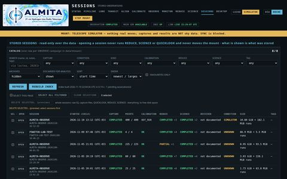
SESSIONS · catalog of every session
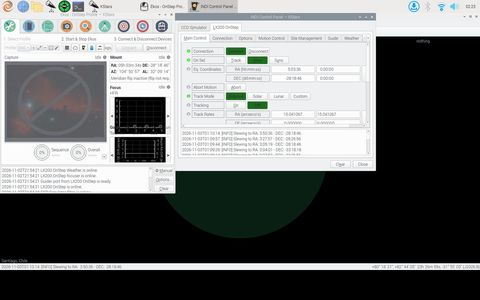
DESKTOP · the capture Pi's own desktopHardware
An RTL-SDR Blog V3 as the science receiver with a Nooelec SAWbird+ H1 LNA, a DIY 1420 MHz dipole feed on a modified grid reflector of about 90 × 60 cm, an equatorial mount with an OnStep controller and INDI, a Raspberry Pi 4 capture box and a notebook. The reflector plate of the feed is fitted; a Pawsey balun comes next. A second, independent RTL-SDR chain for RFI reference is supported but currently disconnected. The hardware is accessible, experimental and repairable. Until November 2026 everything ran on a single Raspberry Pi 5.
Scientific honesty
Current HI measurements are relative and instrumental: ALMITA does not claim an absolute calibration, and the first hydrogen detection (above) is a single night that still has to be repeated. Next come an open-sky night with frequency switching across the Milky Way, solar alignment, a Y-factor with the current feed and a Pawsey balun. The antenna beam used for mapping is an operator-configured, provisional model until a proper beam characterisation is done, and no astrophysical interpretation is automated. Results are those of an experimental amateur instrument, not of a professional observatory.
Why ALMITA exists
The project explores how far accessible hardware can be pushed toward careful, auditable amateur radio astronomy: raw data are preserved, uncertainties are explicit and claims are conservative.
Some parts are carefully engineered. Some parts are carefully attached with plastic cable ties. Both approaches have survived surprisingly well so far.